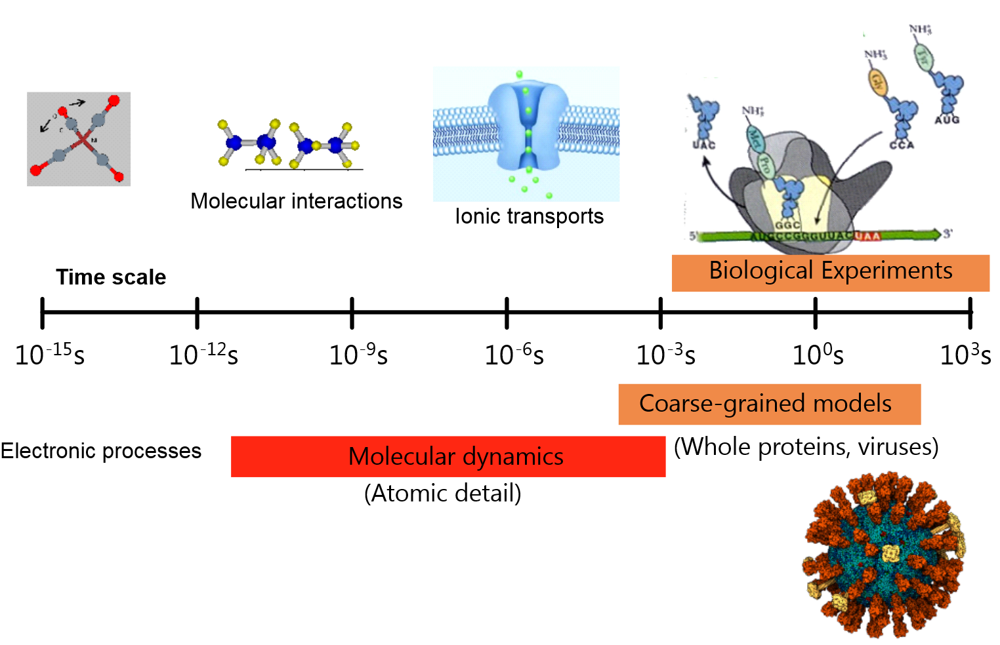

What is molecular dynamics¶
Molecular dynamics (MD) is a theoretical tool for modelling the detailed microscopic behaviour of many different types of system, such as gases, liquids, solids, polymers, surfaces and clusters. It can be used to monitor the microscopic mechanisms of energy and mass transfer in chemical processes, and to calculate dynamical properties such as absorption spectra, rate constants and transport properties. It can also be employed as a means of sampling from a statistical mechanical ensemble to determine equilibrium properties, including average thermodynamic quantities (pressure, volume, temperature etc.), structure and free energies along reaction paths. The time scales for MD simulations are typically between picoseconds (\(10^{-12}\) s) and milliseconds (\(10^{-3}\) s), while length scales start at angstroms (\(10^{-10}\) m) and can extend to micrometres (\(10^{-6}\) m).
{kind=link}
In an MD simulation, the classical equations of motion governing the microscopic time evolution of a many body system are solved numerically, subject to the boundary conditions that are appropriate for the geometry or symmetry of the system. Since a general analytical solution is not possible for many-particle systems, we must resort to numerical methods and computers. Only classical mechanics are covered since a fully fledged many-particle time-dependent quantum method is not yet available. A Maxwell-Boltzmann averaging process (i.e. time-averaging) is used to calculate thermodynamic properties from the results of an MD simulation.